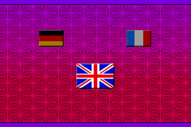

Shaman King - Master of Spirits 2 (Europe) (En,Fr,De)
SRAM 256K Save Format Spec gbakit Built-In 📺 Joybus 💾 MultiBoot 🎮 4P Link
Cartridge Identity
- Game Code
B2MP(FamilyB2M)- Header Title
SHAMAN KING2- Maker / Revision
A4/ rev0- ROM Size
- 16.0 MiB (16,777,216 B)
- Save Media
SRAM 256K- SHA-256
71a634ec37b85bccdde4e70bf5352d4d13bee34a21bdc3cefe721e8b748e1ec8- Engine / SDK Group
comm-014(25 families)
Screenshots


Link Cable & Multiplayer Communications
This title contains detected communication capabilities: 📺 Joybus 💾 MultiBoot 🎮 4P Link.
Detailed protocol specifications, SIO registers, Joybus commands, and MultiBoot sequences are documented in the Link & Multiplayer Reference.
- Multi-Player SIO (4P)
- 16-bit ring network · SIOCNT (
0x04000128) literals:0x9f2b18,0x9f2b78,0xa8ca5c· SIODATA32/SIOMULTI0 (0x04000120) literals:0x6deff4,0x6fd76c,0x8821bc - GameCube Joybus
- Register literal
REG_JOYCNT(0x04000140) at offset0x638f04 - GameCube Joybus
- Register literal
REG_JOYCNT(0x04000140) at offset0x6df004 - Single-Cart MultiBoot
- Single-Cartridge MultiBoot (Download Play) client/server handler · Thumb SWI 0x25 (
0xDF25):0x16ed3a,0x18adbe,0x2bf5b0,0x421ff4
Battery Save Format Specification
Open Full Save Format SpecDownload Sample .sav (32,768 B)Download save-format.json
- Specification Coverage
- 32 mapped fields · 1 verified checksum(s) · Confidence: MEDIUM
- gbakit Built-In Support
- Built-in (B2MP)
- Emulator Verification
- Checksum enforced: Yes · Repaired save accepted: No
gbakit save verify B2MP save.sav
gbakit save decode B2MP save.sav
gbakit save fix B2MP damaged.sav -o repaired.savObserved Battery Save Layout
- Fill Byte & Active Size
0xFFfill · 0–10,872 / 32,768 B active (entropy 0.31 bits/B)- Active Offset Ranges
0x0–0xA2,0xA4–0x305,0x307–0x42E,0x430–0x691,0x693–0x7BA,0x7BC–0xA1D,0xA1F–0xB46,0xB48–0xDA9, +8 more (25 total)- ASCII Magic / Headers
- None detected
- Observed Variable Regions
- 10,872 bytes across 25 spans:
0x0–0xA2,0xA4–0x305,0x307–0x42E,0x430–0x691,0x693–0x7BA,0x7BC–0xA1D,0xA1F–0xB46,0xB48–0xDA9, +12 more - Candidate Checksum/Counter Spans
- None
Asset Map (formatkit.asset-map.v1)
Download B2ME-r0-4c19fffd355d3a71.asset-map.json.gz (208,204 B (203.3 KiB)) Verified PASS · 2.27% coverage
| Metric | Bytes / Value | Entries |
|---|---|---|
| Identified | 380,535 B (371.6 KiB) (2.27%) | 1,773 |
| Mapped | 0 B (0.00%) | 0 |
| Opaque | 0 B (0.00%) | 0 |
| Unknown | 16,396,681 B (15.64 MiB) (97.73%) | 1,696 |
| Total ROM Size | 16,777,216 B (16.00 MiB) | 3,469 |
| Coverage % | 2.27% | — |
| Entries w/ Code Refs | 1,934 / 3,469 (55.75%) | — |
Top Identified Formats: gfx.gba-palette (1,756 · 276,032 B (269.6 KiB)) · audio.krawall-sample (15 · 91,954 B (89.8 KiB)) · compress.bios-rle (1 · 12,357 B (12.1 KiB)) · gba.rom-header (1 · 192 B)
Largest unknown Extents (Headerless / Custom Asset Candidates)
| Offset | Size | Shannon Entropy | Code Refs |
|---|---|---|---|
0x0034627C | 1,023,364 B (999.4 KiB) | 5.751 bits/B | 0 |
0x00271C20 | 869,948 B (849.6 KiB) | 6.544 bits/B | 0 |
0x00210020 | 400,352 B (391.0 KiB) | 7.092 bits/B | 0 |
0x00130604 | 391,896 B (382.7 KiB) | 6.213 bits/B | 0 |
0x00AB9420 | 318,188 B (310.7 KiB) | 3.635 bits/B | 0 |
gzip -dk B2ME-r0-4c19fffd355d3a71.asset-map.json.gz && gbakit map verify rom.gba B2ME-r0-4c19fffd355d3a71.asset-map.json
gbakit assets export rom.gba --asset-map B2ME-r0-4c19fffd355d3a71.asset-map.json -o out/Text, Fonts & Scene Data
- Primary Text Encoding
- Plain ASCII (uncompressed) (
611ASCII strings ·5Shift-JIS runs) - Font & VWF Indicators
- VWF Width Table 1bpp Font · BIOS SWIs: BitUnPack
0x10:7· LZ770x11/12:7· Huffman0x13:4· RLE0x14/15:14 - Scene & Packaging
119ROM pointer tables (≥32 entries,7≥200) ·60relativeu32TOCs ·541OAM metasprite hits
Hardware MMIO Subsystems
ppu_display0x8000a44,0x80567bcsave_bus_sram_flash0x800c5cc,0x800c654
Regional Variants & Revisions (Family B2M)
- Shaman King - Master of Spirits 2 (USA) (
B2ME, 16 MiB)